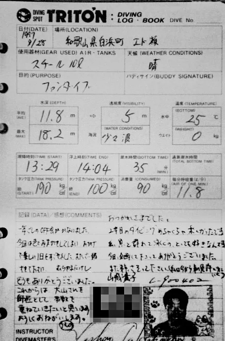
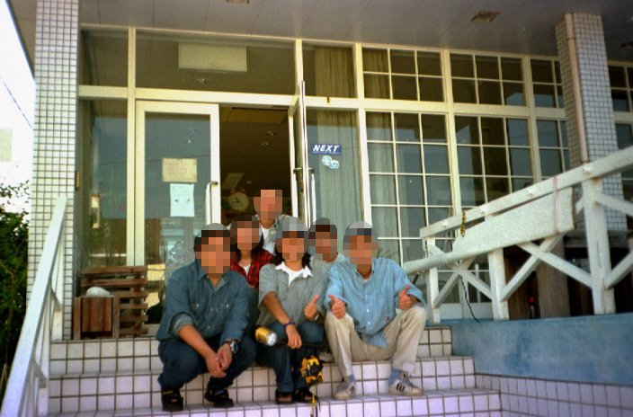

The road Orz passed by 2026 年 08 月
08 月 15 日 ( 土 )
Dive #198 ダイバーとしての個人史 #4 SDML (Scuba Diving Mailing List) の頃
そういえば昔、東芝 Libretto でメーリングリストサーバーを動かして、ダイバーのためのメーリングリストを主催していた。
現在と違って方法もわからず、メーリングリストサーバーのホスティングサービスもあるかどうかすらもわからなかった。
なのでサーバーをレンタルはせず、冗談抜きで東芝 Libretto でメーリングリストサーバーソフトを動かして、仕事の昼休みに ISDN 電話まで走ってメールの配信処理を手動で一括してやっていた。
サーバーソフトに一定時間ごとにメールの配信処理をする機能があって、仕事が終わって帰宅してから、その機能を利用して一定時間ごとに受信メールの配信処理をしていた。その時間が 1 時間おきだったか 30 分おきだったか、10 分おきだったかはさすがに覚えてない。
off 会ダイビングもやった。
Nifty-Serve のダイビング関連フォーラムや、他の草の根 BBS、草の根メーリングリストで off 会としてダイビングに出かけるというのは、ある程度散見されていた。
ぼくたちも単純にそれを真似た。
最初にメーリングリストで、off 会で潜りに行きたいね、って話になって、その 1 年後ぐらいに南紀白浜日帰り off が実現できた。1997 年 9 月 28 日の日曜日のことになる。

白浜に高橋 CMAS コースディレクターというツテがあるぼくが初回幹事を担当した。ぼくが NAUI アシスタントインストラクターだったからではなく、off 会はあくまでプライベートダイブとして企画した。
でも幹事と言っても参加メンバーの調整、日程調整、高橋さんへの連絡、大まかな計画を立てるくらいのことしかしなかった。NAUI の基準上アシスタントインストラクターは引率はできないからになる。
なのでぼくはあくまで NAUI Master Scuba Diver としての参加になる。
その時は白浜の高橋さんを頼って行ってたんだけど、そのまま高橋さんのお客さんになった人もいた。そんな感じで人と人が繋がって行ってて、けっこうあのメーリングリストはやって良かったなって思う。
たしかメーリングリスト名は SDML (Scuba Diving Mailing List) にしてたと思う。ネットで検索したらでてくる SDML とは別物で、もっとこじんまりとした草の根メーリングリストだった。たしかメールの流量も 30 通もなかったと思うし。
画像は第１回目の白浜日帰りoff のときのログ。
ログブックの上にプリントされている Diving Spot Triton は当時大阪市淀川区にあったお店で、そこのオリジナルログブック。
ぼくはこの Diving Spot Triton で 1994 年にアシスタントインストラクターに認定された。でもこのお店は随分昔に閉店してしまった。
このお店は高橋 コースディレクターとは無関係で、高橋コースディレクターは小寺くん人脈になる。ぼくは小寺くんと潜れなくなっても、白浜に行くときは高橋さんを頼っていた。
off 会ダイビングの参加者の多くが Open Water Scuba Diver だったと記憶している。もしかすると Advanced Open Scuba Diver の人もいたかもしれないけれど記憶が定かじゃない。プライベートだからカードランクなんて気にしていなかったからというのがある。
Open Water Scuba Diver や Advanced Open Water Scuba Diver だけで潜りにいくとかどうかしてんじゃねぇか、って今のダイバーなら思うかも知れない。インストラクター連中も思うかも知れない。
でも昔はセルフって当たり前だった。
でもこのときはエド瀬って書いてることからわかる通り、ボートダイブだから現地のサービスというか現地のコースディレクターの高橋さんを頼っている。
ぼくは NAUI だったし、中には PADI の人もいたし、そもそもどの指導団体なのかすら覚えてない人もいる。
そもそもみんなそれぞれがどの指導団体の Open Water Scuba Diver なのかなんてまったく興味がなかった。単にダイバー仲間に飢えていた。今の人たちとまったく変わらない。
みんな Open Water だったけど (ぼくだけ NAUI アシスタントインストラクターだけど)、みんな最低でも Open Water を持っていた。Open Water を持っているのだから当たり前だけど、みんな普通にバディダイブができる人たちだった。
なので問題は何も起きなかった。
これって昔の人が特別優れてたってお話でなくて、Open Water で学んだことを愚直にやっているだけで、特別な何かを持ってる集まりではまったくなかった。みんな普通にバディダイブを楽しんでいた。

写真は高橋さんがサービス提供の拠点として使っていたペンションの入り口になる。結構お世話になっていたのにペンション名を忘れてしまった。場所は今でも迷わずに行ける。それくらい通った。白浜ではここばかり使っていた。
向かって階段右横の柵の向こう側がダイビングプールになる。現在ではこのダイビングプールは埋められてもう存在しない。そもそもペンション自体がもうない。建物はあるのだけれどリノベーションされて今はグループホームになっている。
当時お母さんお二人が何時もいてペンションを切り盛りされていた。そこで高橋さんが講習をしたり、高橋さんのファンダイブに参加するダイバーが集まる場所だった。
ぼくと小寺くんが最初に海を共にしたのがここになる。
懐かしいのだけれど、このペンションはもうない。お二人のお母さんも高橋さんも、そもそもまだご存命なのかすらわからない。
Diving Spot Triton でのアシスタントインストラクターとして認定されるまでの期間はぼくにとってまさに青春と言って良い時期だった。そしてこのペンションでの高橋さんと小寺くん、SDML の面々との時期も青春と呼んでよい時期だったと思う。ぼくはすでに 33 だったけど。
そしてその後、ぼくは被災者だったという理由で職を失う。仕事でなにか失敗をしたわけでもなく、単に阪神・淡路大震災の被災者だという理由で職を失う。
法的な手段で持って何が何でもしがみつくこともできたのだろうけど、残ってもそこに幸せややりがいはあるまいと考えて解雇を飲んだ。解雇なので飲まざるを得なかった。そしてぼくは完全に IT 業から足を洗うことになる。
そしてその後、家族を抱えたまま職を失って途方に暮れているぼくを、常勤スタッフとして拾ってくれたのが Diving Spot Triton オーナーである師匠になる。なのでそのことを師匠は忘れているようだけれども、ぼくやぼくの家族にとっても恩人になる。でも家族はそのことを今でも知らない。
ダイビングショップが人を雇用するのは並大抵のことではない。すでに西浦さんという先輩インストラクターが雇用されているから、普通はぼくが入り込む隙はない。でも師匠はぼくを無理して雇ってくれた。恩人としか呼べない。
そして Diving Spot Triton 常勤時代に、ぼくのもう一つのそして人生で一番輝いてた時期が始まることになる。
常勤時代に先輩インストラクターの西浦さん経由で、師匠に Open Water とビーチのガイドはもう任せて大丈夫だ、という評価をもらうことになる。ガッツポーズが出たが、それはまだ講習は Open Water 以外はだめで、ボートでのファンダイブ引率も任せられないということを意味する。
ぼくは 30 代半ばに差し掛かろうとしていたが、まだまだインストラクターや開業にはまだ遠いと認識していた。まだ身に着けなければならないことが山ほどあった。ぼくはインストラクターになるのに必要なことだけでなく、オーナーになるのに必要なことをまだまだ学ぶ必要があった。だから師匠の背中を追い続けていた。
でも師匠はそのことを知ってか知らずか、突然 Diving Spot Triton を閉店してしまい、川西に別のお店を開店する。そして川西に開店した店も閉店してしまい、師匠はぼくの目の前から忽然と消える。
そしてぼくは最初の迷走状態に突入する。
- Category :
- #Records of Orz's Road
- #ダイビング
- #スクーバダイビング
- #Scuba Diving Mailing List
- #SDML
- #ダイバーとしての個人史